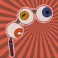
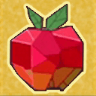
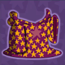
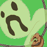

DOWNLOAD
PATCH NOTES
WIKI
SPICY BATTLE
DISCORD SERVER
GITHUB
DOWNLOAD
PATCH NOTES
WIKI
SPICY BATTLE
DISCORD SERVER
GITHUB
Master the ways of magic to become the (nearly) Ultimate Wizard! Everything gives you Power Damage!
|  |
Eyeball Whip Lash your foes with this whip of eyeballs. Eyes all in a line .. like an eye queue? |

|
Anti-anti-magic Potion Magic brew of potent magic mojo is actually powerful anti-magic, but reversed. Just drink it! |
|  |
Crystal Gem Apple Ultimate Crystal Power! Crystalline body and death-ray eyes, all wrapped up in this tasty package. |
|  |
Wizard Robe The robe of the Nearly Ultimate Wizard. Just 1 star missing. |
|  |
Ghost Pouch A pouch with a trapped spirit. Good for your health, better with spells. |